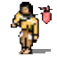

Italiano
Italiano Français
Français Deutsch
Deutsch Русский
Русский Español
Español Svenska
Svenska 日本語
日本語 Українська
Українська 中文 ［中文］
中文 ［中文］ Português
Português Suomi
Suomi Slovenčina
Slovenčina English
EnglishPoorMan
| Deskbar: | ||
| Localita: | /boot/system/apps/PoorMan | |
| Impostazioni: | ~/config/settings/PoorMan Settings |
Poorman è un piccolo webserver che è estremamente facile da configurare. Naturalmente che non puo offrire alcune funzionalità avanzate come altri software di server , dopo che e solo un webserver per il uomo povero.
Al suo primo lancio, Poorman chiede la cartella che sta per essere servita al web.Si si sceglie , una nuova cartella /boot/home/public_html è creata per lei. Come una pagina iniziale un file HTML con il nome predefinito per index.html deve essere presente lì.
Poorman si presenta con una semplice console che registra la sua attività. Poi, ci sono le informazioni di stato se il server è in esecuzione, in quale cartella viene servita, e un contatore di visite. Impostazioni vengono modificate con :

Il pannello delle impostazioni è suddiviso in tre schede:
Nel è possibile selezionare un'altra cartella per servire, inserite un'altra pagina di inizio ed avere la possibilità di inviare un elenco di file se la pagina di inzio non è presente.
lconsente di dis/ attivare la registrazione alla console o in alternativa ad un file di loggare separato.
La schede contiene l'impostazione per il numero massimo di connessioni simultanee.
Le voci di menu della finestra console sono tutti auto-esplicativo. Con loro si può per esempio salvare (parti) il rendimento della console, cancellare la console o il file di loggare e avviare / arrestare il server o sbarazzare il contatore visite.